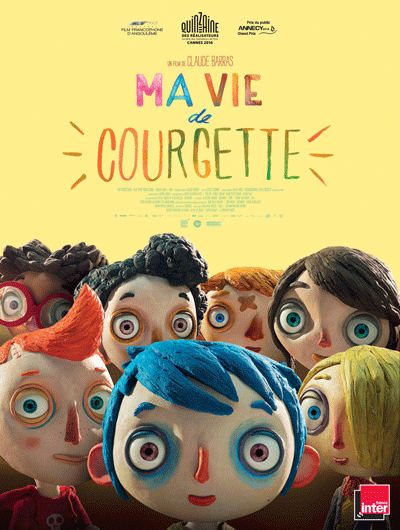
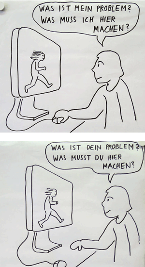
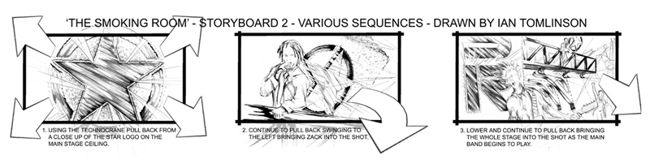

Quelle: Herve Tullet, Mitmach Buch
# Intro
Was ist experimentelles Erzählen? Wo begegnet es uns? Wurde uns schon einmal etwas experimentell erzählt?
Uns kamen folgende Beispiele in den Sinn:
- Ma vie de courgette
- Rick & Marty (auf Tonspur basierend)
- Ohne Rolf
- Hazel Brugger
- Interaktives Theater / Impro Comedy / Theatersport
- Musik (Freestyle) / Battles
- Video Games
# Interaktion
Als zukünftige Interaction Designer müssen wir ein einfaches, zum Thema passendes Interface kreieren können. Der User soll schnell erkennen was er wie machen kann/soll.
Hier ein einfaches, kurzweiliges Beispiel eines Interface, bei welchem schnell erkannt wird was man machen kann:
Quelle: trumpdonald.org
# Dramaturgie
"Der Begriff Dramaturgie (von griechisch δραματουργέιν dramaturgéin „ein Drama verfassen“) hat heute mehrere Bedeutungen. Ursprünglich bezieht er sich auf die Komposition von Dramen.
Die Erzählarten:
- Dramatik: Epilog/Exposition > Konflikt > Auflösung
- Episodenfilm
- Krimi (Who-done-it-Prinzip)
Wie muss eine Geschichte erzählt sein? Was mag ich, was mag ich nicht in erzählten Geschichten?
- Erwartungsreaktion brechen
- Überraschung vs. Spannung
- Voraussicht / Vorankündigung
- Pflanzen (sähen) & ernten
- Dramatik & Epik
- Ensemble
# Storyboards
Bei Filmen sind immer sehr viele Personen beteiligt. Um sicherzustellen, dass die einzelnen Szenen so umgesetzt werden wie der Drehbuchautor sich das gedacht hat, wird jeweils ein Storyboard erstellt.
Ein Storyboard ist ein Skribble, welches die einzelnen Sequenzen des Films bildlich zeigt. Je nach Budget sind die Storyboards von ganz einfach, bis zu sehr detailliert gezeichnet.
Da die Bilder alleine noch nichts über die Kameraführung verraten, wird diese mittels Pfeilen pro Bild angegeben (siehe Beispiel unten). Unterstützt wird das Storyboard bei Präsentationen von kurzen Texten von wichtigen Infos/Ideen, welche nicht gezeichnet werden konnten.
Quelle: www.tomlinson-design.com
# Kameraführung
Wie oben kurz erwähnt, wird die Kameraführung bereits im Storyboard festgelegt. Hier drei Beispiele, welche dem Regisseur helfen, diese zu verstehen:
- Nummerierung der Kameras: Welche Kamera wird verwendet?
- Pfeile in/out: Ein-/auszoomen
- Kameras ausserhalt des Randes: In welche Richtung wird «gefahren/geschwenkt»?